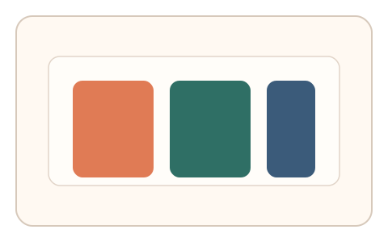
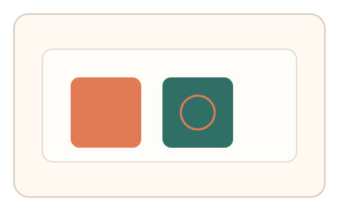
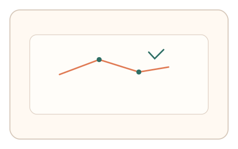

#45
视觉思考范式：时域/适应/残影
已扩展
色彩恒常漂移
在不同光照模拟下匹配同一物体颜色，利用色彩恒常与选择路径验证真实性。
概念原文
同一物体在不同光照模拟下闪现，用户判断“同一物体”的匹配；记录选择顺序与耗时。
依赖人类色彩恒常性与选择路径，而非语义识别。
研究背景
色彩恒常使人类在光照变化下仍可保持对物体颜色的相对稳定判断，但会出现可测的漂移与犹豫模式。通过记录匹配顺序与耗时，可形成行为特征。
核心机制
- 同一物体在不同光照条件下快速呈现。
- 用户选择与目标相同的物体版本。
- 记录选择顺序、停顿与耗时。
- 分析恒常漂移与匹配路径。
用户流程
- 步骤 1：用户看到目标与多种光照版本。
- 步骤 2：用户选择匹配目标的版本。
- 步骤 3：系统分析选择路径并判定。
判定信号
匹配顺序与停顿分布
真实匹配通常伴随短暂停顿与回看。
恒常漂移的方向与幅度
光照变化引起的偏移具有稳定倾向。
判定逻辑
结合匹配顺序、停顿节奏与漂移方向，要求落在人类恒常分布区间；一次到位或无漂移判异常。
对抗面
- 脚本基于色值直接匹配
- 重放真实用户的选择序列
防御与缓解
- 随机化光照色温与强度，避免固定答案
- 加入轻微纹理噪声降低色值匹配
- 叠加鼠标轨迹与微时序信号进行多信号判定
可达性与风险
提供高对比或替代任务模式，避免对色觉异常用户造成障碍。
- 显示设备色彩校准差异影响恒常判断
- 环境光线变化影响感知结果
可视化状态

状态 1：光照版本
同一物体在不同光照下呈现。

状态 2：匹配选择
用户选择匹配版本。

状态 3：漂移判定
分析匹配路径与漂移方向。
参考资料
Color constancy
说明色彩恒常与光照适应。
Color adaptation
说明光照变化下的色彩偏移。